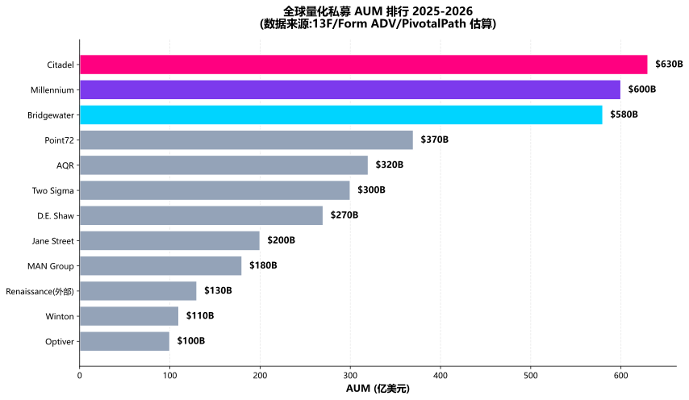
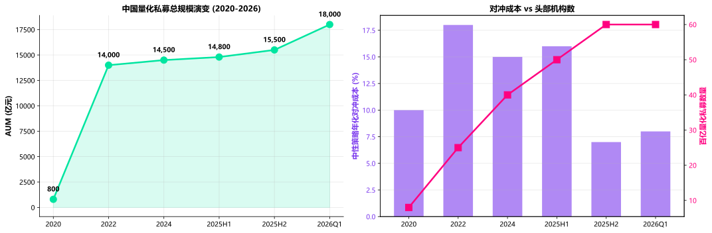

主题切换
1.5 量化行业格局 2024-2026
概念详解
为什么"行业格局"是开篇模块的必备章
截至 2025 年末,全球量化交易在主要股票市场中的成交量占比已经稳定在 55%-75% 区间(美股约 60-70%、A 股约 25-30%、欧洲 50-60%、日本 60%+),并在加密资产、外汇、商品等市场持续抬升。一个新人如果不了解"行业由谁主导、规模有多大、策略集中在什么方向、监管如何变化",就无法判断自己未来要进入的赛道是朝阳还是夕阳。本章的目标就是用 2024-2026 当下数据 给你一张清晰的量化产业地图。
名词解释:AUM
资产管理规模 (Assets Under Management),即机构管理的资金总规模。量化私募 AUM 通常指名义管理规模 (GAV) 而非纯 alpha 暴露。
名词解释:中性策略 (Market Neutral)
通过构建"多头+空头"组合对冲市场 Beta 风险,赚取与大盘涨跌无关的 Alpha 收益。在中国主要指"股票多头+股指期货空头"组合。
名词解释:指增 (Index Enhancement)
在跟踪某宽基指数(如沪深 300、中证 500、中证 1000、中证 A500)的基础上,通过量化选股获得相对于该指数的超额收益。
全球量化私募 AUM 格局(2024-2026)
根据公开披露与行业研究,全球头部量化机构的 AUM 在 2024-2026 年呈现"美系双雄领跑、欧系稳扎稳打、亚洲快速追赶"的格局。下表整理了 2025 年末/2026 年初估算的 Top 12 全球量化机构:
| 排名 | 机构 | 国家 | AUM (亿美元) | 核心策略 | 关键特征 |
|---|---|---|---|---|---|
| 1 | Citadel | 美国 | 630+ | 多策略/Macro/统计套利 | 全天候多策略,机构客户占比高 |
| 2 | Millennium | 美国 | 600+ | Pod 架构多策略 | 数百个独立 Pod,分散化极致 |
| 3 | Bridgewater | 美国 | 580+ | 全天候/Macro | 全球最大对冲基金,纯 alpha 暴露 |
| 4 | AQR | 美国 | 320+ | 因子/另类 Beta | 学术派代表,因子投资标杆 |
| 5 | Two Sigma | 美国 | 300+ | ML/统计套利 | 工程化与 ML 投入领先 |
| 6 | D.E. Shaw | 美国 | 270+ | 量化/计算 | 重视研究基础设施 |
| 7 | Renaissance | 美国 | 130* | 旗舰大奖章 + 外部基金 | 大奖章不对外开放,规模受限 |
| 8 | Point72 | 美国 | 370+ | 股票多空/宏观 | 2024 年收购 D. E. Shaw 旗下部分团队 |
| 9 | MAN Group | 英国 | 180+ | CTA/多策略 | AHL 系列 CTA 历史悠久 |
| 10 | Winton | 英国 | 110+ | 趋势/统计套利 | 学术派 CTA |
| 11 | Optiver | 荷兰 | 100+ | 做市/HFT | 全球期权做市龙头 |
| 12 | Jane Street | 美国 | 200+ | ETF 做市/OTC | 全球 ETF 做市双雄之一 |
数据来源说明:AUM 数据综合自各机构 13F/13D 披露(美国 SEC)、Form ADV、年度投资者信、行业研究机构 (PivotalPath、HFM、eVestment) 估算,截至 2025 年末/2026 年 Q1。 * Renaissance 外部基金 RIFF 等规模约 130 亿,大奖章不对外开放。
关键指标仪表盘(2025-2026)
$630B
Citadel AUM60+
百亿量化私募(中国)¥1.8T
中国量化总规模25-30%
A 股量化成交占比3-5%
2024Q3 中性回撤
Citadel AUM60+
百亿量化私募(中国)¥1.8T
中国量化总规模25-30%
A 股量化成交占比3-5%
2024Q3 中性回撤
关键趋势:Pod Shop 的兴起
2020 年后,"Pod Shop" 模式(由 Millennium、Point72、Citadel 等开创)成为行业主流——将一个大平台拆分为数十至数百个小型独立团队 (Pod),每个 Pod 拥有自己的策略、资金、风险预算,大幅降低了"明星研究员离职带走 alpha"的风险。这一架构是 2024-2025 年美系头部机构 AUM 高速扩张的核心组织因素。
中国量化私募规模演变:2020-2026
中国量化私募的发展速度全球罕见,核心节点如下:
- 2020 年:总规模约 800 亿元人民币,头部机构如幻方、九坤、明汯初露锋芒
- 2021 年:突破 1 万亿关口,量化中性、指增策略进入爆发期
- 2022 年:总规模约 1.4 万亿,但遭遇"中性策略集体回撤"事件
- 2023 年:震荡分化,头部集中度抬升,中尾部机构洗牌
- 2024 年:9.24 政策转向后流动性恢复,但 Q3 中性策略再度承压
- 2025 年:全年量化私募管理规模 3 个月增长近 3,500 亿元,百亿量化私募突破 60 家,总规模超 1.5 万亿元
- 2026 年初:延续"慢牛"格局,但 3 月回调中部分指增产品回撤显著
关键数据:
| 指标 | 2020 | 2022 | 2024 | 2025 末 | 2026 初 |
|---|---|---|---|---|---|
| 量化私募总规模 (亿元) | 800 | 14,000 | 14,500 | 15,500+ | 18,000+ |
| 百亿量化私募数量 (家) | 8 | 25+ | 40+ | 60+ | 60+ |
| 中性策略对冲成本中枢 (年化) | 8-12% | 15-20% | 12-18% | 4-10% | 6-10% |
| 头部指增平均超额 | 15-25% | 5-10% | 8-12% | 10-15% | 5-10% |
数据来源:中基协季度备案数据、招商证券《私募策略年报 2025》、朝阳永续、私募排排网,数据截至 2025-12 至 2026-Q1。
海外 vs 国内量化对比
两地在 AUM、策略集中度、监管、衍生品可获得性等维度差异显著:
| 维度 | 海外 (美股/欧股) | 国内 (A 股) |
|---|---|---|
| 头部 AUM 规模 | 单家 500-630 亿美元 | 单家 100-700 亿人民币 (15-100 亿美元) |
| 成交量占比 | 55-75% | 25-30% |
| 策略集中度 | 分散(多策略+多资产) | 中性+指增集中度极高(>50%) |
| 主流频率 | 中低频到高频全频谱 | 中低频为主,高频受监管压制 |
| 衍生品 | 完备(个股期权、ETF 期权、期货) | 股指期货/股指期权为主 |
| 融券 | Reg SHO 框架下灵活 | 2024-07 暂停转融券,2025 余额仅 165 亿 |
| T+1 / T+0 | T+0/T+1 并存 | T+1 + 涨跌停 |
| 高频监管 | Reg NMS、SEC Rule 15c3-5 | 程序化交易管理规定(2024-05)+ 沪深北实施细则(2025-04) |
| 因子衰减周期 | 18-36 月 | 6-18 月(更拥挤) |
要点:中国量化不是"次一级的海外量化",而是制度约束下的独立生态。理解 T+1、涨跌停、融券约束、程序化报备等"中国特色"比照搬海外因子库更重要。
A 股量化成交量贡献与定位
2024-2026 年,A 股量化在交易结构中的占比稳步抬升:
- 2024 年:量化日均成交占 A 股约 22-25%,中性策略贡献了市场流动性的重要增量
- 2025 年:占比抬升至 25-30%,但呈现"头部稳、尾部出清"格局
- 2026 年:在中证 A500 与中证 1000 等宽基 ETF 规模扩张后,量化在宽基指数增强上的策略容量进一步释放
这一占比远低于美股的 60-70%,但相比 2018 年 A 股量化刚起步时的不到 5%,已是质变。对个人来说,这意味着 A 股量化策略的"有效域"仍在扩张,但同质化与拥挤度的风险也在同步抬升。
2024 Q3 中性策略集体回撤:关键事件复盘
2024 年第三季度,中国头部量化中性策略(股票多头 + 股指期货空头)出现集体回撤,行业整体回撤幅度达 3-5%。复盘主要原因有三:
- 雪球结构产品敲入 (Knock-In):2023 年发行的 2,000+ 亿雪球产品在 2024 年 9-10 月集中面临中证 500/中证 1000 标的的敲入线,触发了对冲盘的连锁平仓
- DMA 杠杆产品强平:部分私募通过 DMA(收益互换)加杠杆到 2-4 倍,基差扩大时遭遇保证金追缴和强平
- 市场风格切换:9.24 政策转向后,大盘风格快速切换至小盘、微盘股,前期"持有大盘 + 空 IF"的中性组合暴露了净敞口
此次事件后,行业显著加强了对冲成本动态建模和最大回撤熔断机制——回测必须支持"基差随时间变化"而非静态假设,这是教学的核心工程基线。
数学原理
行业集中度:赫芬达尔-赫希曼指数 (HHI)
衡量头部量化私募 AUM 集中度:
HHI = \sum_{i=1}^{N} s_i^2 \times 10{,}000
其中
- HHI < 1,500:竞争性市场
- 1,500-2,500:中度集中
2,500:高度集中
2025 年中国量化私募 HHI 估算:头部 10 家占比约 35%,HHI 约 800-900,仍属"竞争性市场";但 2022-2026 年趋势性上升,值得关注。
中性策略的净收益模型
股票多头 - 股指期货空头的中性策略,其年化净收益近似为:
R_{neutral} = \underbrace{R_{alpha}}_{多空超额} + \underbrace{\beta \cdot R_f}_{融券利息} - \underbrace{C_{hedge}}_{对冲成本} - \underbrace{C_{borrow}}_{融券成本} - \underbrace{C_{impact}}_{交易成本}
其中关键变量:
:多空组合相对基准的超额收益,典型值 8-15% :股指期货年化对冲成本(基差年化),2024 H1 约 15-20%,2025 H2 降至 6-10% :融券年化成本,A 股约 8-10% :换手率 × 滑点 + 印花税,A 股单边 0.05%
实战算账:某中性策略 2024 H1 跑出 10% 毛收益,但 4-7 月对冲成本高至 18-20%,叠加融券 10%、成本合计近 30%,净收益可能为负。这也是 2024 年中性策略"看着漂亮但赚钱难"的核心机制。
拥挤度:因子 IC 衰减率
因子 IC (Information Coefficient) 在被广泛使用后的衰减模型:
IC(t) = IC_0 \cdot e^{-\lambda t} + \epsilon_t
其中
- 低频价值因子:
/ 月,半衰期 ~14 月 - 中频动量因子:
/ 月,半衰期 ~7 月 - 高频量价因子:
/ 月,半衰期 ~2 月
这解释了为什么 2026 年"高频量价 alpha"已普遍被认为严重拥挤——半衰期不到 3 个月,任何 alpha 投出去都很容易被市场吞噬。
Python实战
📌 案例:绘制"全球量化私募 AUM 排行榜"横向条形图
此处有展示代码展开 ▼
python
import matplotlib.pyplot as plt
import numpy as np
# 数据准备:2025 年末/2026 年 Q1 估算 AUM (单位:亿美元)
firms = ['Citadel', 'Millennium', 'Bridgewater', 'Point72',
'AQR', 'Two Sigma', 'D.E. Shaw', 'Jane Street',
'MAN Group', 'Winton', 'Optiver', 'Renaissance(外部)']
aum = [630, 600, 580, 370, 320, 300, 270, 200, 180, 110, 100, 130]
# 按 AUM 降序排列
sorted_idx = np.argsort(aum)[::-1]
firms_sorted = [firms[i] for i in sorted_idx]
aum_sorted = [aum[i] for i in sorted_idx]
# 配色:头部三家用渐变突出
colors = ['#FF0080', '#7C3AED', '#00D4FF'] + ['#94A3B8'] * (len(firms) - 3)
fig, ax = plt.subplots(figsize=(12, 7))
bars = ax.barh(firms_sorted, aum_sorted, color=colors, edgecolor='white', linewidth=1.5)
# 数值标签
for bar, val in zip(bars, aum_sorted):
ax.text(val + 8, bar.get_y() + bar.get_height()/2,
f'${val}B', va='center', fontsize=11, fontweight='bold')
ax.set_xlabel('AUM (亿美元)', fontsize=12, fontweight='bold')
ax.set_title('全球量化私募 AUM 排行 2025-2026\n(数据来源:13F/Form ADV/PivotalPath 估算)',
fontsize=14, fontweight='bold', pad=15)
ax.invert_yaxis()
ax.grid(True, axis='x', alpha=0.3, linestyle='--')
ax.set_axisbelow(True)
ax.spines['top'].set_visible(False)
ax.spines['right'].set_visible(False)
plt.tight_layout()
plt.show()点击展开可浏览运行结果
================================================== 全球量化私募 AUM 排行 2025-2026 ================================================== Citadel $ 630B Millennium $ 600B Bridgewater $ 580B Point72 $ 370B AQR $ 320B Two Sigma $ 300B D.E. Shaw $ 270B Jane Street $ 200B MAN Group $ 180B Renaissance(外部) $ 130B Winton $ 110B Optiver $ 100B -------------------------------------------------- Top 12 累计: $3790B

📌 案例:中国量化私募规模时间序列与对冲成本对比
此处有展示代码展开 ▼
python
import matplotlib.pyplot as plt
import numpy as np
# 时间序列(2020-2026 估算)
years = ['2020', '2022', '2024', '2025H1', '2025H2', '2026Q1']
total_aum = [800, 14000, 14500, 14800, 15500, 18000] # 亿元
hedge_cost = [10, 18, 15, 16, 7, 8] # 中性策略年化对冲成本中枢(%)
big_firms = [8, 25, 40, 50, 60, 60] # 百亿量化私募家数
fig, axes = plt.subplots(1, 2, figsize=(15, 5))
# 子图 1:AUM 增长曲线
ax = axes[0]
ax.plot(years, total_aum, marker='o', linewidth=2.5, color='#00E5A0', markersize=10)
ax.fill_between(years, total_aum, alpha=0.15, color='#00E5A0')
for x, y in zip(years, total_aum):
ax.annotate(f'{y:,}', (x, y), textcoords="offset points",
xytext=(0, 12), ha='center', fontsize=10, fontweight='bold')
ax.set_ylabel('AUM (亿元)', fontsize=11, fontweight='bold')
ax.set_title('中国量化私募总规模演变 (2020-2026)', fontsize=12, fontweight='bold')
ax.grid(True, alpha=0.3)
ax.spines['top'].set_visible(False)
ax.spines['right'].set_visible(False)
# 子图 2:对冲成本 vs 百亿机构数
ax = axes[1]
ax2 = ax.twinx()
bars = ax.bar(years, hedge_cost, alpha=0.6, color='#7C3AED', label='对冲成本(%)', width=0.6)
line = ax2.plot(years, big_firms, marker='s', linewidth=2.5,
color='#FF0080', markersize=10, label='百亿机构数')
ax.set_ylabel('中性策略年化对冲成本 (%)', fontsize=11, fontweight='bold', color='#7C3AED')
ax2.set_ylabel('百亿量化私募数量', fontsize=11, fontweight='bold', color='#FF0080')
ax.set_title('对冲成本 vs 头部机构数', fontsize=12, fontweight='bold')
ax.tick_params(axis='y', labelcolor='#7C3AED')
ax2.tick_params(axis='y', labelcolor='#FF0080')
ax.grid(True, alpha=0.3, axis='y')
plt.tight_layout()
plt.show()点击展开可浏览运行结果

常见误区
❌ 误区 1:中国量化已经"内卷到顶"
事实:A 股量化日均成交占比仅 25-30%,显著低于美股的 60-70%。行业仍在扩张期,2025 年总规模 3 个月增 3,500 亿、百亿机构突破 60 家即是证据。真正的内卷集中在头部 5 家之间,中尾部机构仍有机会通过差异化策略(CTA、可转债、定增、事件驱动)获得超额。
❌ 误区 2:海外顶级量化用了"黑科技"我们学不会
事实:AQR 的因子模型、Millennium 的 Pod 架构、Two Sigma 的工程化流水线在学术界与开源社区都有公开论文与代码复现。真正不可复制的是"组织文化 + 数据积累 + 监管沟通经验",而非秘密算法。头部量化最珍贵的资产是 10-20 年跨周期数据,而非某个 Python 库。
❌ 误区 3:2024 Q3 中性回撤是"模型失效"
事实:本质上是对冲成本与基差结构的周期性波动 + 雪球敲入引发的流动性事件,叠加风格切换导致的敞口暴露。绝大多数回撤策略在 2025 H2 已修复,业绩回到 10%+ 中位数。把它当成"量化末日"是过度解读。
❌ 误区 4:中证 A500 的崛起会"挤出"中证 1000/2000 指增
事实:三个宽基的相关性约 0.85-0.92,并不完全替代。A500 主要是"行业均衡"工具,而 1000/2000 仍是小盘 alpha 的主战场。2025 年实证数据:A500 指增超额中位数约 8-10%,而 1000 指增 10-12%、2000 指增 14-16%。策略分散化仍有效。
❌ 误区 5:排名 = 实力,只看 AUM 大小
事实:AUM 是规模而非回报。大奖章基金规模仅 100 亿但年化 66%(扣费前),AQR 规模 320 亿但长期超额仅 3-5%。真正衡量实力的是风险调整后收益 (Sharpe / IR / Calmar),而非 AUM。盲目追求规模反而是 alpha 衰减的根源。
小测验
📝 测验 1:中国量化中性策略在 2024 Q3 集体回撤的主要原因
A. 雪球敲入 + DMA 杠杆强平 + 市场风格快速切换
B. 量化模型集体失效,因子预测能力骤降
C. 监管全面收紧导致策略无法继续运行
📝 测验 2:下面哪个数据最能反映"行业格局健康度"?
A. 量化私募总 AUM 增速
B. 头部机构 HHI 集中度 + 风险调整后收益中位数
C. 百亿量化私募数量
📝 测验 3:为什么中国量化的"策略集中度"比海外更高?
A. 中国技术落后,只能做几种简单策略
B. T+1 / 涨跌停 / 融券受限 / 衍生品品种稀缺
C. 中国散户主导导致策略同质化
实战练习
机构深度调研(可交付物:1,500 字报告 + 1 张策略对比表) 选择一家中国百亿量化私募(建议:幻方、九坤、明汯、衍复、灵均、诚奇、金锝),通过公开资料(基金业协会备案、朝阳永续、第三方访谈)梳理其:① 成立年份与 AUM 演变;② 策略分布(中性/指增/CTA/股票多头占比);③ 团队规模与背景;④ 2024-2025 年代表产品收益与回撤;⑤ 差异化护城河。
海外对标分析(可交付物:AUM 对比表 + 1 张策略矩阵图) 选 1 家海外巨头(Citadel / Millennium / AQR / Two Sigma 中任选),与 1 家中国头部私募做"5 维度对比":AUM、策略集中度、Pod 团队架构(海外) vs 投研组架构(国内)、技术栈(Rust/Polars/DuckDB 使用深度)、监管沟通模式。
行业指标监测仪表盘(可交付物:Python 数据脚本 + 月度更新模板) 用
yfinance或akshare拉取以下数据,搭建个人量化行业指标看板:① 中证 500/1000 ETF 规模;② 股指期货基差(月度均值);③ 融券余额;④ 两融余额;⑤ 中证 A500 ETF 头部产品规模。每周/月更新一次,观察指标拐点。
延伸阅读
- 中基协(AMAC)季度私募备案月报:2024-2026 中国量化行业一手数据
- 招商证券 / 国泰君安 / 中信证券 年度私募策略年报:头部机构业绩与策略分布
- PivotalPath / HFM / eVestment 行业研究:全球对冲基金 AUM 与业绩指数
- Citadel 2024 Investor Letter、Millennium 2024 Investor Letter、AQR 2024 因子研究合集
- 《Asset Management at the Speed of Light》—— Larry Tabb,行业基础设施演进
- 2025-2026 中国量化行业复盘与展望:开源研报网
本章要点
- 全球量化 2024-2026 头部格局由美系 Citadel / Millennium / Bridgewater / AQR / Two Sigma 主导,AUM 在 100-630 亿美元区间
- 中国量化私募总规模从 2020 年的 800 亿元飙升至 2026 年初的 1.8 万亿元,百亿机构突破 60 家,但 2024 Q3 中性策略集体回撤暴露出基差波动与衍生品风险传染的脆弱性
- 海外与国内量化在 AUM、策略集中度、监管、衍生品可获得性上差异显著,理解"中国特色制度约束"比照搬海外因子库更重要
- A 股量化成交量占比 25-30%,显著低于美股 60-70%,行业仍在扩张期,真正的内卷集中在头部 5 家之间,差异化策略仍有空间
- 2025 年中证 A500 ETF 一年扩张至 2,000 亿规模,但与中证 1000/2000 指增形成"宽基梯队",分散化配置仍有意义
- 因子半衰期在中国普遍比海外短(高频量价因子不到 3 个月),拥挤度监控必须前置到策略配置项
- 衡量行业健康度的核心指标是 HHI 集中度 + 风险调整后收益中位数,而非单纯 AUM 增速或机构数量